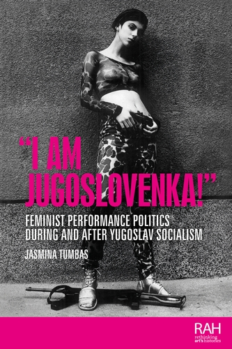

Rodila sem se v Jugoslaviji. Sem Jugoslovanka. Velikokrat po razpadu te države sem se spraševala, kaj sem zdaj, še posebej, ker je bilo nastajanje novih držav povezano z zavračanjem kakršnekoli povezave s tisto 'komunistično tvorbo, ki je bila zapor za ljudstvo'. Biti Jugoslovanka takrat in biti jugonostalgičarka danes ima negativen in slabšalni pomen. Danes sem uradno Srbkinja ali Srbijanka, kakor komu ustreza. Jugoslavija je imela pomembno vlogo pri oblikovanju moje osebnosti, mojega odnosa do ljudi, do sveta, ki me obdaja. Je neločljiv del moje identitete. Bila sem otrok in o politiki nisem vedela ničesar, razen tega, da je to nekaj, kar počnejo odrasli, in da je to ime časopisa, ki ga je kupoval moj oče. Moja starša nista bila verna in nikoli se nisem imela za Srbkinjo ali pravoslavko. V šoli in doma sem se naučila, da nista pomembni ne vera ne narodnost, ampak ljudje. Brala sem dela iz te velike države in gledala gledališke igre, televizijske drame in filme v vseh jezikih in narečjih, ki so obstajala ...1
1Sicer daljši citat igralke Mirjane Karanović je relevanten osebni testament o dediščini Jugoslavije, ki zrcali temeljni optimizem modernističnega političnega projekta in kljub razpadu skupne države vztraja kot intimni, etični in kulturni imperativ Mirjane Karanović, ki za to zavzame pozicijo Jugoslovanke. V izjavi je razvidna predvsem tenzija med geopolitično realnostjo postsocialistične fragmentacije in vztrajnostjo jugoslovanske izkušnje kot kulturno-afektivne formacije za preseganje pravnih in nacionalnih kategorij.2 Pojem 'Jugoslovanke' se sicer pogosto veže na popkulturno ikono, Lepo Breno, pojavlja pa se tudi v memoarih, esejih, romanih in feljtonih. Doslej ni bil deležen obravnave kot konkretnejši konceptualni pojem, razen v kontekstu socioloških analiz migracij Jugoslovank v tujino,3 torej v odnosu do zunanjega Drugega.
2To stanje spremeni monografija Jasmine Tumbas »I am Jugoslovenka!«: feminist performance politics during and after Yugoslav socialism (2022), v kateri avtorica osrednji pojem 'Jugoslovanka' zastavlja kot poglavitno konceptualno izhodišče. Tehnično dovršeno in estetsko zgledno monografijo je razdelila na več tematskih poglavij, ni pa ga strukturirala kronološko, temveč tematsko: v prvem delu obravnava specifične avtorice in umetnice, v drugem pa mnoštvo avtoric, umetniških gest in političnih konsekvenc. Tumbas v tem kontekstu ne analizira 'Jugoslovanke' zgolj kot etnično, naddržavno ali afektivno-identitetno kategorijo, pač pa tudi kot kritično-politični subjekt, ki se vzpostavlja skozi umetniško in feministično prakso – pogosto kot upor proti nacionalizmu, patriarhatu in ideološki redukciji zgodovinskega spomina. Tako pristop presega okvir nostalgije in namesto tega obravnava 'Jugoslovanko' kot metodo za razumevanje kontinuitet emancipatornih feminističnih praks med socializmom in postsocializmom.
3Jasmina Tumbas, docentka s področja sodobne umetnostne zgodovine in študij performansa ter predstojnica podiplomskega študija na Oddelku za globalne študije spola in spolnosti na Univerzi v Buffalu, je s tem svojo monografijo »I am Jugoslovenka!« umestila na križišče med umetnostno zgodovino, feministično teorijo in (post)jugoslovanskim študijem. Monografija, objavljena leta 2022, odstira nov analitični prostor za premislek o prispevku jugoslovanskega in postjugoslovanskega feminističnega odpora skozi prizmo 'Jugoslovanke', ki ne nadomesti v akademiji doslej uveljavljenih form »ženskega udejstvovanja, ustvarjanja, aktivizma in angažiranja v Jugoslaviji«, temveč jih podrobneje opredeli in obogati. Konceptualno orodje, kot ga avtorica vpelje, je dobrodošlo tudi za področji socialne ter politične zgodovine: 'Jugoslovanka' ni le teoretski izziv, temveč tudi metodološko izhodišče za nove analize (post)jugoslovanskega prostora. Ta figura presega nacionalne in ideološke identitete, hkrati pa razkriva tudi potencialne politične artikulacije spolno pogojenih, afektivnih in odporniških praks, tesno povezanih z jugoslovanskim socializmom in njegovimi posmrtnimi življenji. Posebnost tovrstne skupne konceptualne osi pojma 'Jugoslovanke' je tudi njena specifična politična umeščenost med Vzhodom in Zahodom.
4V idealnem smislu bi uvedba pojma 'Jugoslovanke' pomenila konceptualno in analitično inovacijo, ki bi odpirala nove poti za razmislek ne le o feminističnih, temveč tudi o drugih družbenopolitičnih praksah: »'Jugoslovanka' v vsakdanjem življenju«, »'Jugoslovanka' v znanosti«, »'Jugoslovanka' v politiki«. A vendar ostaja vprašanje – ali ta koncept morda preveč zamegli notranje politične in kulturne razlike med obravnavanimi akterkami (subjekti) ter koliko tvega univerzalizacijo identitet, ki so zgodovinsko in ideološko heterogene. Z drugimi besedami, kakšna je nevarnost, da bi se partikularne zgodovinske izkušnje umetnic podredile nejasni, simbolni, metanarativni figuri. Avtorica poskuša na ta izziv odgovoriti s tem, da pojem 'Jugoslovanka' oblikuje kot os, ki kot transverzala povezuje na primer umetnice in aktivistke skozi različna zgodovinska obdobja in politične ureditve. Tumbas v analizo vnaša performativno dimenzijo delovanja in ustvarjanja (post)jugoslovanskih žensk, kjer 'Jugoslovanka' ni zgolj entiteta, ki fenomenološko obstaja ali ne obstaja (več), temveč se z gestami, praksami, kritikami nenehno izvaja in (re)pozicionira v prostoru med etiko in politiko. Karanović to etično idejo (jugoslovanstvo kot nauk) razširja tudi na vsakdanje življenje:
5Bila sem neskončno ponosna, da živim v Jugoslaviji. Trdno sem verjela in bila prepričana, da bo samo še boljše in lepše. Še danes verjamem, da bi se to lahko zgodilo. Vem, da je ta država za vedno mrtva, in jokala sem in prebolela sem to. Vem, kje živim, sprejela sem že neprijazne mejne stražarje in žige v potnem listu. Kar vem danes, je, da bom brez kakršnegakoli sentimenta v svoji biti še vedno Jugoslovanka. To je zapisano v moji duhovni genetiki in tako bo ostalo do moje smrti.4
6Tako zastavljen koncept, čeprav produktivno subverziven in poln potenciala, se ne izogne nujno dilemi metodološke homogenizacije. Odpira vprašanje, zakaj sploh Jugoslovanka in ne Jugoslovani oziroma ali lahko figura 'Jugoslovanke' zajame raznolikost političnih (in drugih) pozicij, umetniških strategij in ideoloških orientacij. Obstaja tudi (post)identitetno jugoslovanstvo (identitete, ki jih je Jugoslavija oblikovala onkraj nacionalnega, na primer samoupravne, titoistične, internacionalistične), potem kulturno ali performativno jugoslovanstvo – kot prakse in izrazi, ki udejanjajo jugoslovansko zapuščino, nato tudi utelešeni postjugoslovanski spomin, na primer skozi telesa delavcev in delavk, ki nosijo zgodovinski in politični spomin, ipd. Za nas je relevanten tudi obstoj implicitnih 'Jugoslovank' in eksplicitnih 'Jugoslovank'. Analogno »implicitnemu in eksplicitnemu« feminizmu sta implicitni 'Jugoslovan' in 'Jugoslovanka' potemtakem strukturna termina, ki združujeta ne le družbene ali ideološke, temveč tudi kulturne, institucionalne, spominske in politične elemente, ki niso nujno vezani na eksplicitno razumljeno identiteto in samoidentifikacijo – Jugoslovanka v tem smislu ni samo identiteta, je drža.
7Tako tudi avtorica monografije konceptualno zastavi figuro 'Jugoslovanke': ne kot reprezentacije neke vnaprej dane ali vsiljene identitete, pač pa vzpostavljane skozi prakso. Primer tega je način, kako Jasmina Tumbas analizira razmerja med ustvarjalkami in ideološkimi koordinatami državnega socializma, s poudarkom na diskontinuitetah, ki jih je povzročil razpad Jugoslavije, in vzponu etnonacionalističnih režimov. Tumbas v tem kontekstu kritično nagovori nostalgično pojmovanje 'Jugoslovanke' na primeru Lepe Brene in namesto tega skozenj opravi pomembno analizo prehoda iz socializma v postsocializem. Avtorica se sicer uvodoma pomenljivo posveti figuri Naste Rojc, antifašistične umetnice in lezbijke iz leta 1912, ter dvema kvir feministkama iz tridesetih let 20. stoletja, ob bok Lepi Breni pa postavi Esmo Redžepovo, Marino Abramović, Katalin Ladik, Vlasto Delimar, Šejlo Kamerić, Tanjo Ostojić in druge. Monografija tako opravi konceptualno popotovanje, ki se začne pri znanih figurah, kot sta partizanka in tovarišica, ter se nadaljuje z Jugoslovanko, katere pomen se spreminja glede na politični kontekst: od spektakularnosti Lepe Brene v času Jugoslavije do melanholije Šejle Kamerić v projektu Bosnian Girl ali simbolike sarajevskih žensk, ki so med vojno postale mednarodna reprezentacija, slika Jugoslovank. Zadnjo generacijo 'Jugoslovank' uteleša performativna umetnica Selma Selman, rojena po koncu Jugoslavije, leta 1991. Selman je Romkinja, ki je zaradi svojega dela in humanitarnega angažmaja v lokalni skupnosti pridobila naziv »Tito«. 'Jugoslovanko' kot novo generacijo Selman avtoetnografsko evocira tudi sama, na fotografijah med Trstom in Slovenijo.
8S tem primerom Jasmina Tumbas dokončno zavrne nostalgično pojmovanje figure Jugoslovanke in vzpostavi aktualnost tega orodja. Ob tem sprejme realnost koncepta kot nepopolnega in protislovnega ter se zaveda njegovih notranjih napetosti: akterke-umetnice, ki jih vključuje v analizo, so med seboj zelo različne (tudi skoraj nasprotne), a vendar je avtorica pri utemeljitvi konceptualnega orodja 'Jugoslovanke' dosegla pomemben cilj – bralec in bralka ne bosta imela nobenih težav, da vsako od njih razumeta kot 'Jugoslovanko'. Od tod izhaja predpostavka, da delo Jasmine Tumbas ponuja vsaj nekakšen metodološki ključ, ki bi ga bilo mogoče aplicirati širše, ne le v umetniškem polju. Kot predlaga tudi sama, je 'Jugoslovanka' način feminističnega razmisleka o prostoru in času Jugoslavije, ki ne temelji na mitologiji enotnosti, temveč na priznavanju konfliktnosti, razredne razslojenosti in obenem na možnosti solidarnosti. V tem smislu monografiji uspe empirično pokazati, da tudi umetnice, ki zase trdijo, da niso feministke, lahko delujejo feministično in da so tudi umetnice, ki niso rojene v Jugoslaviji ali do nje nastopajo kritično, lahko razumljene in obravnavane kot Jugoslovanke. 5
9Naslednje relevantno vprašanje, ki se zastavlja, je tudi, kaj zgodovinopisje in druge panoge pridobijo z vpeljavo tovrstnega konceptualnega orodja. Za začetek, obravnavana monografija pokaže, da je 'Jugoslovanka' orodje kolektivne subjektivitete, ki vzpostavlja kontinuiteto ne le umetniškega, temveč tudi političnega delovanja. Kot takšno sega od socializma do sodobnosti, ne da bi se pri tem odpovedalo kritičnemu odnosu in odtenkom vseh različnih faz te zgodovine. V tem smislu je 'Jugoslovanka' lahko tudi konceptualna kategorija za raziskovanje vsakdanjega, nevidnega ali neartikuliranega odstopanja od nacionalnih norm, ki vztraja v jeziku, čustvih, vrednotah, spominu in telesu. Monografijo je Jasmina Tumbas utemeljila na bogatem naboru virov – državnih arhivov, arhivov muzejev, inštitutov, mednarodnih centrov in knjižnic. Viri vključujejo številne intervjuje, pogovore, razstavne projekte, osebna pričevanja, zasebne arhive in zbirke, časopisne članke, videogradivo, fotografski material in artefakte. Del vizualnega gradiva je tudi vključen v monografijo in ni uporabljen le ilustrativno, temveč tudi kot konceptualni temelj nekaterih podpoglavij, s čimer je knjiga dostopna širšemu občinstvu, ne da bi žrtvovala analitično kompleksnost.
10Avtorica namenja veliko pozornost kritikam jugoslovanskega sistema, ki naj bi formalno zagovarjal enakost spolov, hkrati pa ohranjal patriarhalne norme in strukture. V monografiji lucidno razčleni napetost med institucionalnimi dosežki: pravicami do porodniškega dopusta, splava in dostopa do izobrazbe ter hkrati kulturnimi predstavami, ki so feminizem pogosto označevale kot individualistično, celo sebično držo, v nasprotju s kolektivističnim duhom socializma. A čeprav Tumbas lucidno razčleni institucionalne in kulturne napetosti, bi si to vprašanje razlik med ideološko vpetostjo ustvarjalk v socializmu in njihovo pozicijo v postsocialističnem kapitalizmu zaslužilo širšo obravnavo in podrobnejšo analizo. Enako velja za enega od osrednjih in konceptualno najbolj domišljenih prispevkov knjige – poglavje, v katerem avtorica obravnava vprašanje kvir jugoslovanske identitete, predvsem skozi zgodbo transspolne ikone in spolne delavke iz devetdesetih let – Merlinke. Ob tem opozori, da je prelom s socializmom v zgodnjih devetdesetih letih pomenil ne le prehod v liberalni kapitalizem, temveč tudi prehod v porast homofobije, seksizma in nasilja nad LGBTQ+ osebami. V tem okviru v ospredje postavi tudi telo – tako cis kot trans – kot prizorišče in medij odpora zoper patriarhat. Vključi številne anekdote, ki ponazarjajo konkretne boje in položaje, med drugim tudi poslabšanje pravic Romov po razpadu Jugoslavije in ob vzponu neoliberalnega kapitalizma, ter feministične prakse s Kosova, zlasti prek delovanja kosovskih »sester Rogova«.
11V kontekstu sodobnih družbenih polarizacij avtorica to poglavje, s tem pa tudi svojo monografijo, pozicionira kot orodje za poglobljeno razumevanje političnih projektov socializma in nacionalizma. 6 Ob vsem povedanem se na trenutke še vedno zdi, da konceptualna moč 'Jugoslovanke' preglasi heterogenost umetniških praks in specifičnih političnih pozicij, ki jih posamezne umetnice zavzemajo. To odprto vprašanje reprezentativnosti7 bi potencialno lahko naslovili s pomočjo metode političnih generacij, ki se osredotoča na formativnost politične izkušnje in prelomnih ali generativnih družbenopolitičnih dogodkov, zaznamujočih politično delovanje. Vsekakor ta aspekt ostaja odprt za razširjene in poglobljene refleksije ter premisleke na preseku med politično teorijo in zgodovino. S tem, ko 'Jugoslovanko' kot figuro postavi v središče kot zgodovinsko figuro, politični subjekt in konceptualno orodje, Tumbas izzove vnovični premislek o prostorskih in časovnih mejah feministične solidarnosti, predstavi pa tudi novo branje samega pojma 'Jugoslovanke'. V tem pogledu je monografija poleg študije umetnosti tudi poglobljen prispevek k razumevanju razvoja feminističnega, mirovnega in antifašističnega delovanja. Medtem ko »jugoslovansko« pogosto deluje kot naddržavna, narodnostno pogojena oznaka, ukoreninjena v političnem projektu jugoslovanskega socializma, 'Jugoslovanka' v ospredje postavlja utelešene, živete, spolno opredeljene izkušnje in subjekte, ki so hkrati produkt in kritika jugoslovanske socialistične modernosti. Ne nazadnje s tem odpira prostor za nadaljnjo razpravo o epistemoloških učinkih takšnih transnacionalnih kategorij v postsocialistični feministični teoriji in zgodovinopisju.
1. Mirjana Karanović, »Yubilej – Ja sam Jugoslovenka,« Peščanik, 1. 12. 2018. Dostopno na: https://pescanik.net/yubilej-ja-sam-jugoslovenka/. Pridobljeno: 12. 5. 2025.
2. Gre za dominantni konceptualni okvir »Jugoslovanov«, npr.: Slobodan Selinić, »Jugosloveni i jugoslovenstvo krajem šezdesetih i početkom sedamdesetih godina XX veka,« Kultura, časopis za teoriju i sociologiju kulture i kulturnu politiku 161 (2018): 105–22.
3. Mirjana Morokvasic, »Jugoslovenke migranti o sebi,«Sociologia Sela, 62-63 (1981): 102–12.
4. Karanović, »Yubilej – Ja sam Jugoslovenka.«
5. Analogno temu na institucionalni ravni je tudi delovanje različnih asociacij (znanstvenih ustanov in možganskih trustov, duhovnih gibanj, dobrodelnih in nevladnih organizacij), ki svoje delovanje razumejo kot apolitično ali antipolitično, a so lahko v svoji vlogi in delovanju de facto zelo politične.
6. Avtorica poudarja kontinuiteto feminističnega odpora od socializma do danes tudi z dokumentiranjem pobud, kot so protesti Žena u crnom, ki so začele delovati leta 1990 in vztrajajo še danes.
7. Kot tudi vprašanje nevarnosti retroaktivnega vpisovanja feminističnega ali jugoslovanskega pomena v prakse, ki samih sebe niso nujno razumele kot feminističnih ali jugoslovanskih.